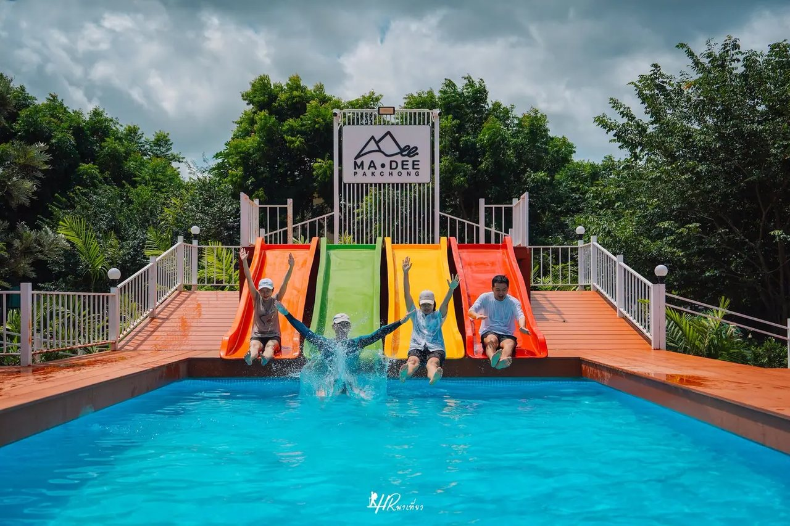
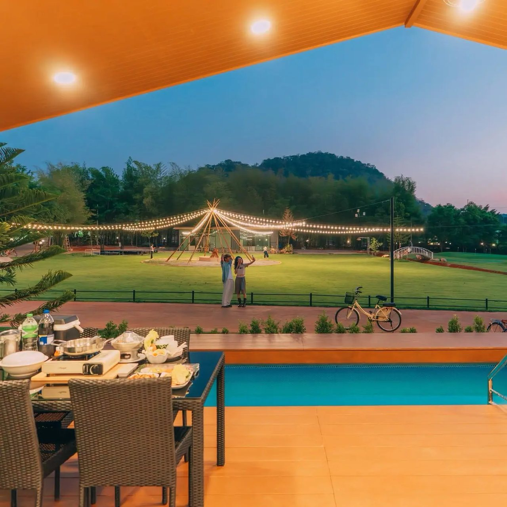
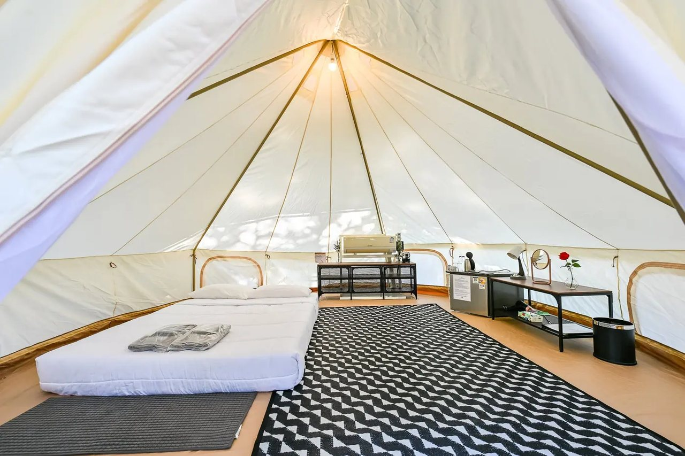
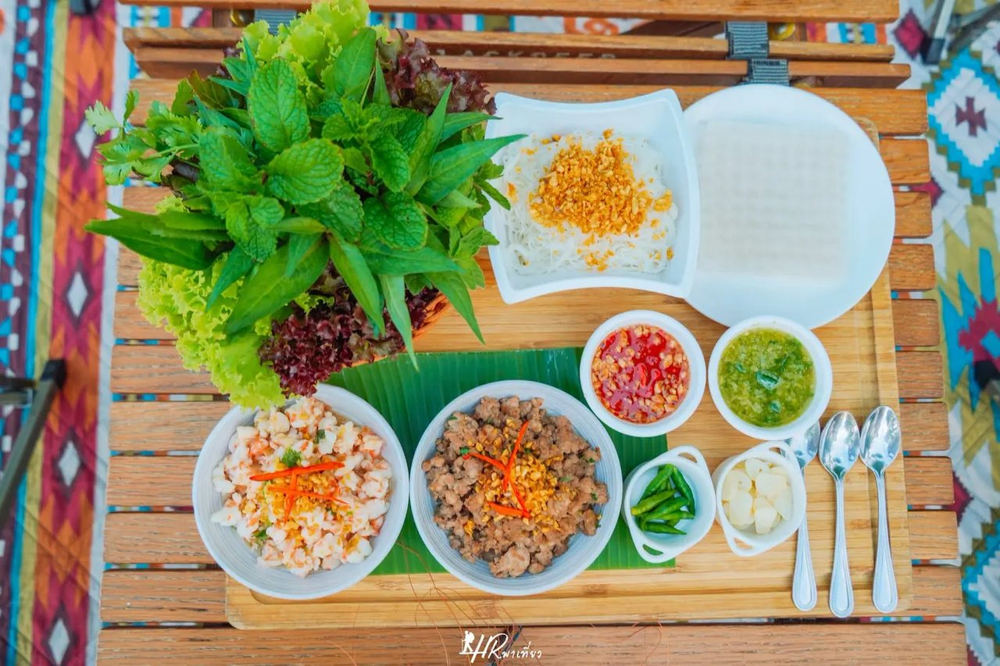
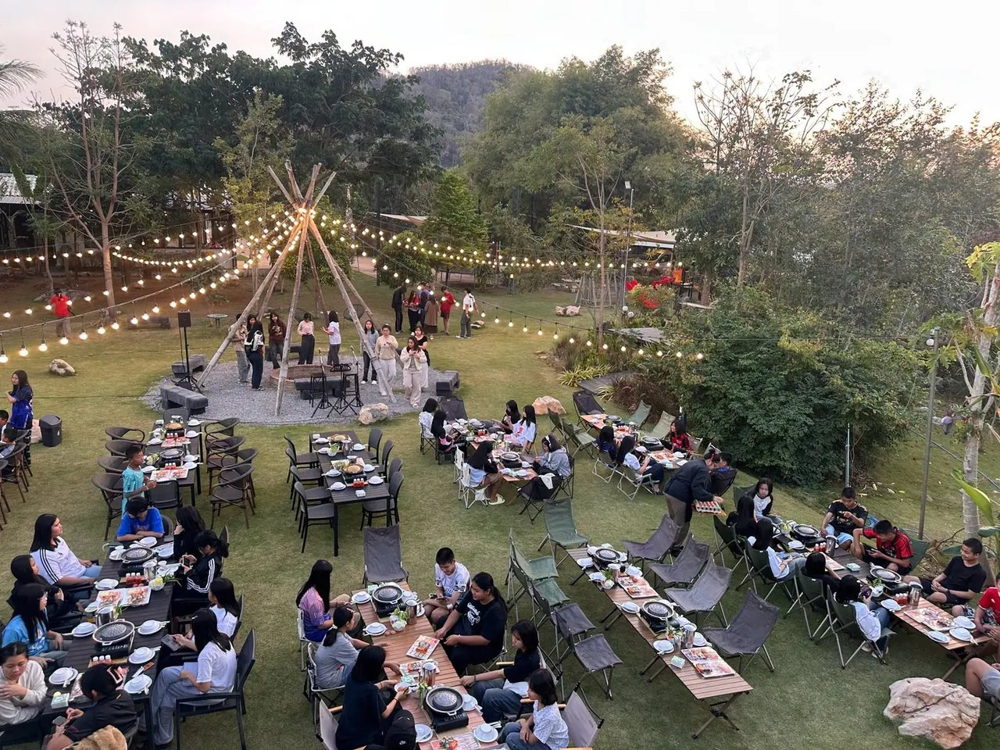

คืนที่ 1 · 3 ธ.ค.Madee Pakchong (มาดี ปากช่อง)
📍 57/1 หมู่ 18 ต.คลองม่วง อ.ปากช่อง จ.นครราชสีมา 30130
- ที่พัก: บ้านพัก/พูลวิลล่า 24 หลัง พักได้ 2–12 ท่าน (มีเต็นท์แอร์ด้วย)
- กิจกรรม: ATV · โกคาร์ท · จักรยาน (มีรถเด็ก) · ลานสเก็ต · ยิงธนู · Kid Club
- สระ: สระใหญ่ + สไลเดอร์ 4 เลน + สระเด็ก
- ราคา: เริ่มต้น ~2,500 บาท/คืน (หลังเล็ก) — วิลล่าสำหรับ 7 ท่านต้องสอบถาม
- โทร: 061-393-5679 · madeepakchong.com



